Boxes y espacios para atención, evaluación y seguimiento de participantes.
Un centro especializado en investigación clínica
En CENRESIN contamos con un equipo multidisciplinario de médicos investigadores, coordinadores de estudios clínicos y profesionales de la salud con experiencia y formación en investigación clínica.
Especialización respiratoria
Experiencia clínica, coordinación y cercanía con los participantes
Trabajamos de manera coordinada en cada etapa de los estudios, manteniendo altos estándares de calidad y rigurosidad, con especial atención a la seguridad, los derechos y el bienestar de nuestros participantes.
Nuestra forma de trabajar combina experiencia, compromiso y cercanía, promoviendo una relación de confianza y una comunicación clara durante todo el proceso de investigación.
Detrás de cada estudio hay un equipo comprometido con hacer investigación de calidad y con cuidar a las personas que hacen posible que ésta avance.

Capacidades del centro
Infraestructura y procesos para investigación clínica
Presentamos las capacidades generales del centro. Los requerimientos específicos se revisan durante cada proceso de factibilidad.
Equipamiento y experiencia clínica vinculada a patologías respiratorias.
Equipo dedicado al seguimiento operativo, documental y regulatorio.
Procesos para manejo y almacenamiento temporal según requerimientos aplicables.
Procesos de recepción, control y almacenamiento conforme a las condiciones del estudio.
Personal con experiencia en investigación y procesos orientados a calidad y trazabilidad.
Las especificaciones técnicas, autorizaciones y disponibilidad de equipamiento serán confirmadas en cada proceso de factibilidad.
Áreas terapéuticas
EXPERIENCIA EN ESTUDIOS de Investigación clínica desde 2006
CENRESIN es un centro de investigación clínica ubicado en Quillota, Región de Valparaíso, Chile, dedicado a la atención de salud y al desarrollo de estudios clínicos en distintas áreas terapéuticas.
Nuestra trayectoria en investigación comenzó en 2006, con una amplia experiencia en el área respiratoria. A lo largo de los años hemos ampliado nuestra participación hacia otras áreas, incluyendo dermatología, salud cardiovascular y estudios de vacunas, entre otras.
Desde nuestros inicios, hemos participado en la ejecución de más de 60 protocolos de investigación clínica, trabajando junto a compañías farmacéuticas y organizaciones de investigación nacionales e internacionales.
Con cerca de 20 años de experiencia, CENRESIN se ha consolidado como un centro de investigación clínica con presencia en la Región de Valparaíso, manteniendo un sello basado en el rigor profesional, la experiencia y la cercanía con nuestros participantes.
Trayectoria en investigación
Experiencia con patrocinadores y CRO internacionales
+60Protocolos de investigación clínica
Desde 2006Experiencia en investigación
Múltiples áreas
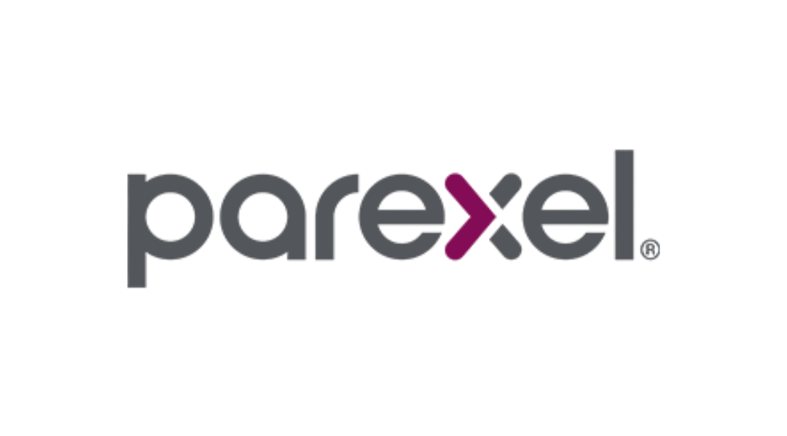
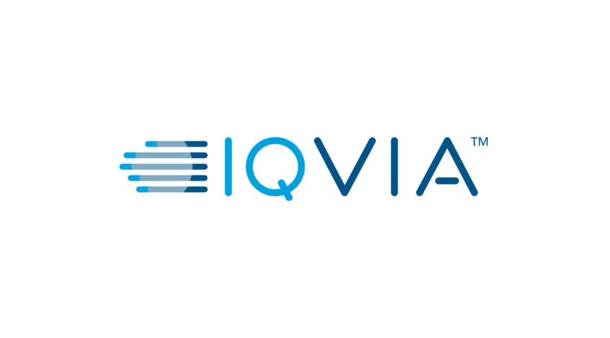
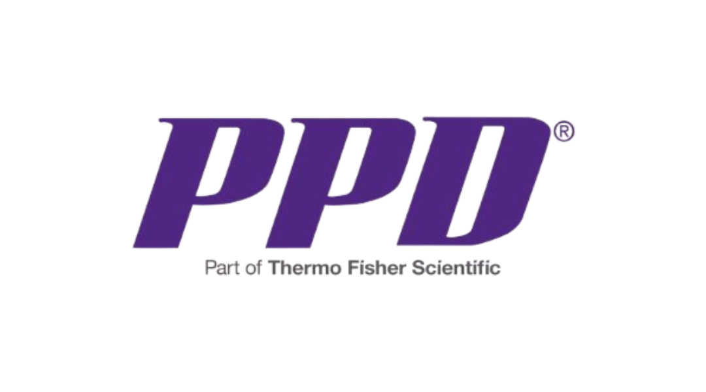
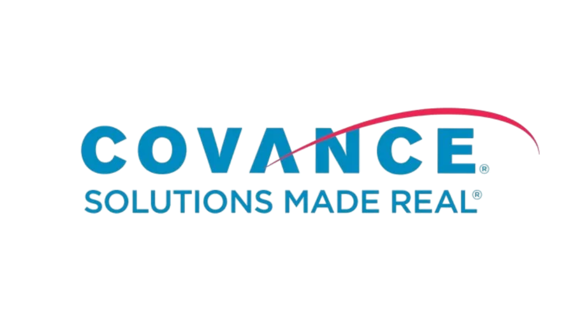
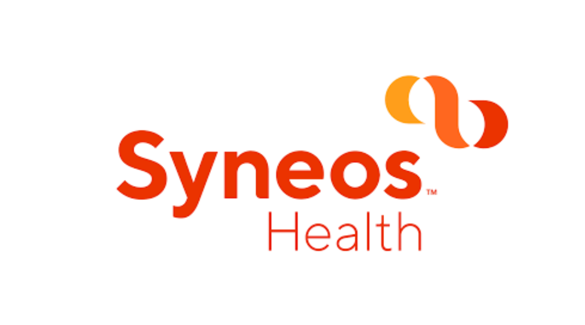
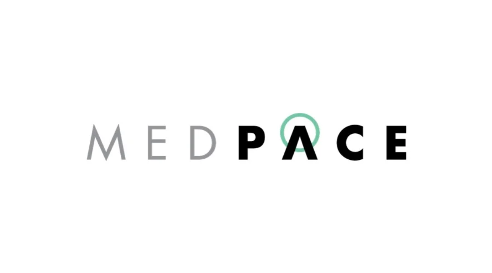
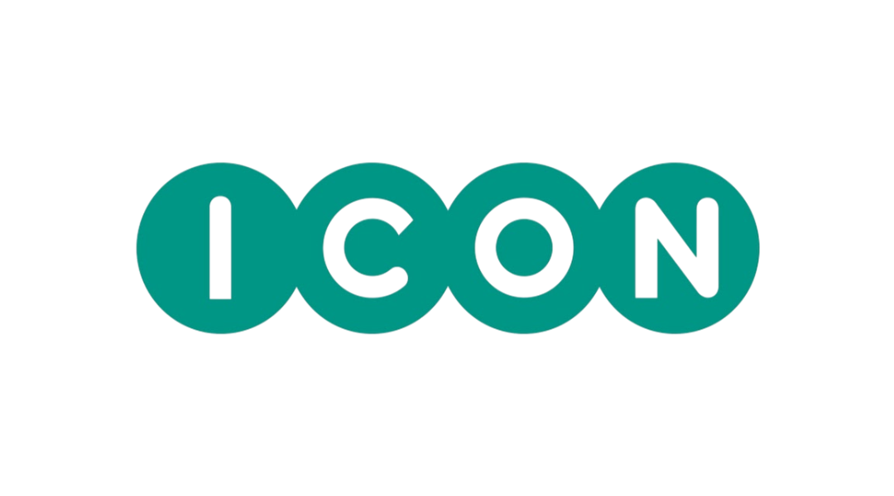
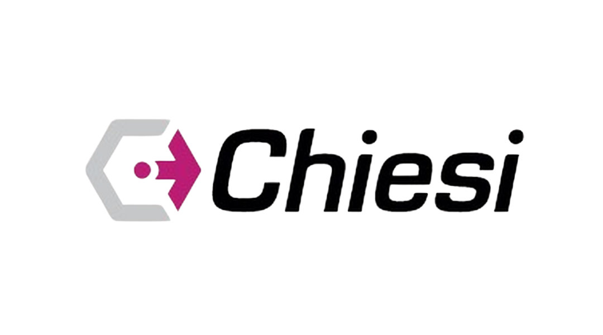
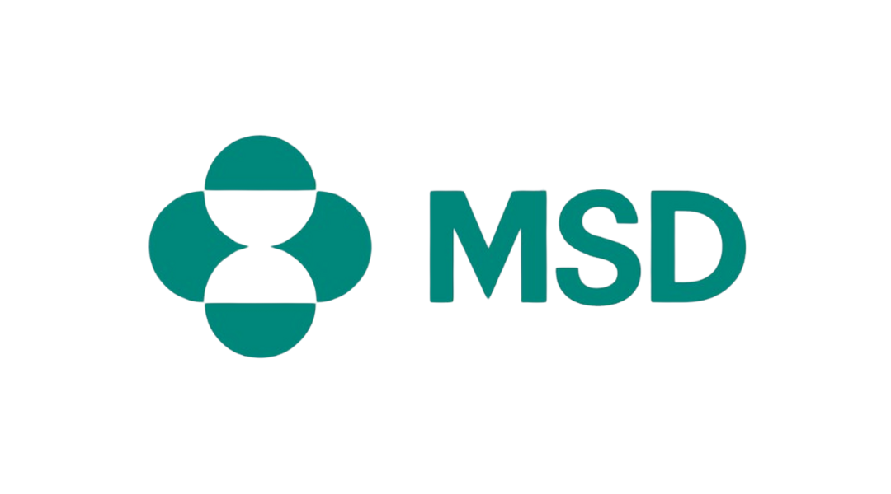
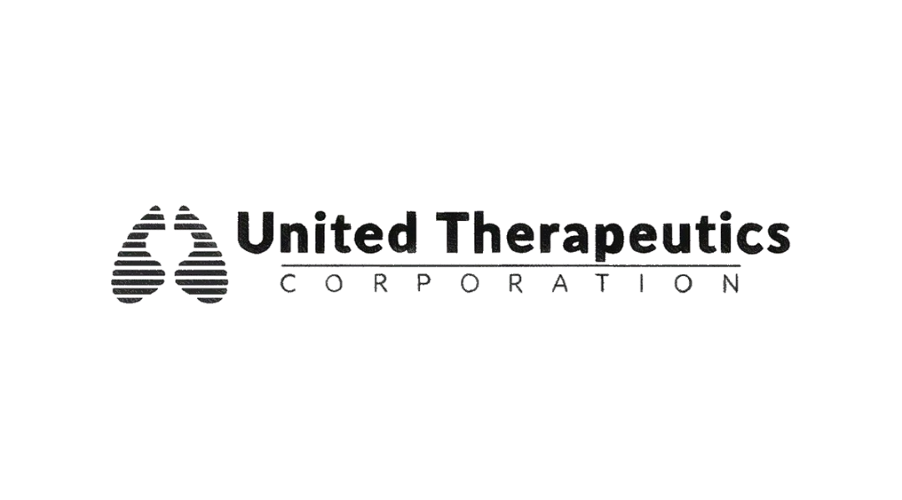
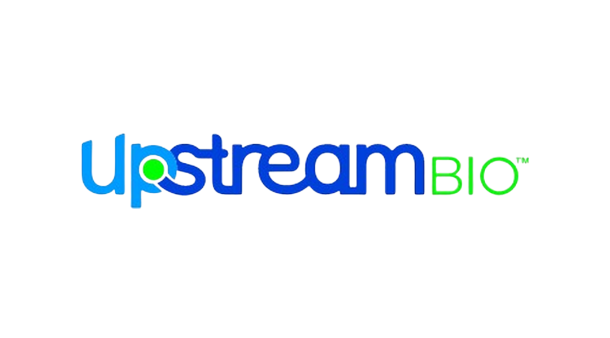
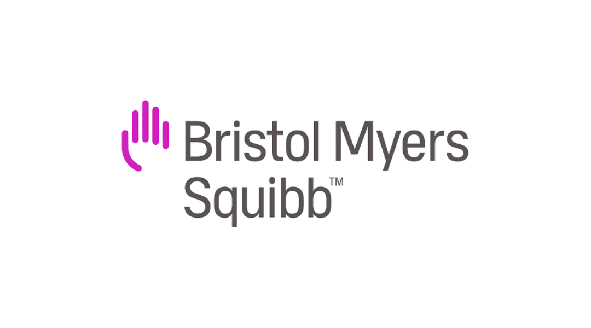
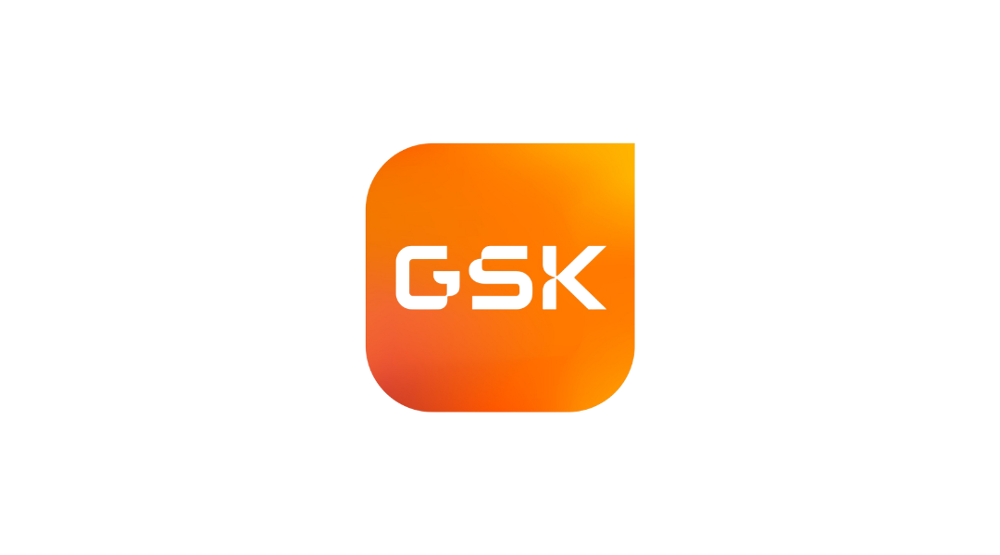
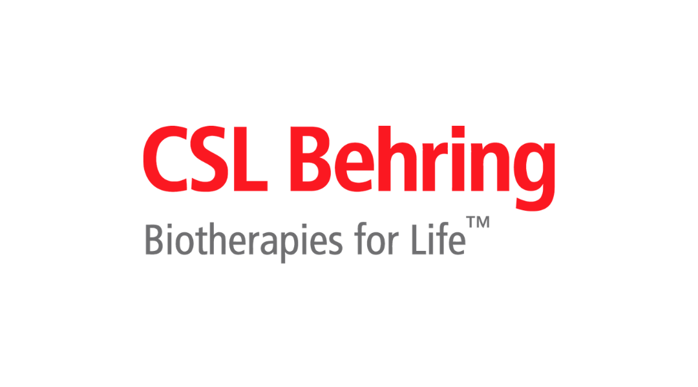
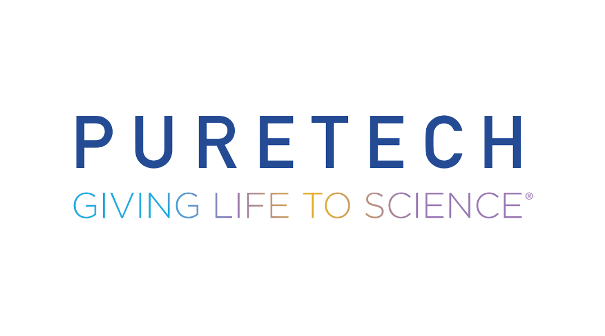
Factibilidad y contacto
Conversemos sobre su próximo estudio
Para consultas de factibilidad, capacidades específicas o antecedentes del equipo de investigación, contáctenos a través de nuestros canales institucionales.
Contacto profesional
Indique organización, área terapéutica, fase y requerimiento general. El responsable y correo específico podrán incorporarse cuando CENRESIN los confirme.
Contactar a CENRESIN ›Participación informada
Cómo será tu experiencia si te interesa participar
Antes de participar recibirás toda la información necesaria para tomar una decisión libre e informada.
¿Quieres invitar a alguien a participar?
¿Conoces a alguien a quien le puede interesar participar?